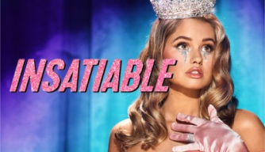
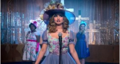

Netflix >> series >> Insatiable
Insatiable
- 
2018 USA
Genre: Drama , Comedy , Thriller Director: Andrew Fleming , Brian Dannelly Cast: Dallas Roberts , Debbie Ryan , Christopher Gorham , Kimmy Shields , Erinn Westbrook , Michael Provost , Alyssa Milano , Arden Myrin
Bob's lawyer's new client, Patty, is a girl with a troubled past who was bullied at school because of her appearance. Having lost weight, she intends to take revenge on her offenders.
-
Season 2 Episode 10
-
Season 2 Episode 9

Season 2 Episode 8
-
Season 2 Episode 7
- 
Season 2 Episode 6
-
Season 2 Episode 5
In the series Insatiable (2018), Patty struggles to make friends. But many do not even want to talk to her, and all because she is a little overweight. Excess weight has become the cause of complexes, ridicule and bullying from the surrounding people. One day, Patty got tired of enduring all this and constantly feeling like a loser. The girl decided to end once and for all with those extra pounds.
With great effort, she managed not only to lose weight, but also to become the first beauty. Now the situation has changed radically: everyone began to pay attention to Patty, there was no way out from the guys. Very many themselves stuffed into girlfriends and invited to the company. But how can this stop the newly appeared beauty and the first girl in school? The heroine is ready to go to a modeling agency, as well as take revenge on all those who once mocked her. Watch online the series Insatiable (2018) Netflix all seasons all series in a row in Russian and in the original language with subtitles. The video is fully available in high quality HD 720p and FullHD 1080p absolutely free. Viewing is possible on mobile phones: Apple iOS iPhone, iPad tablet, on systems running Android, as well as on Smart TVs.